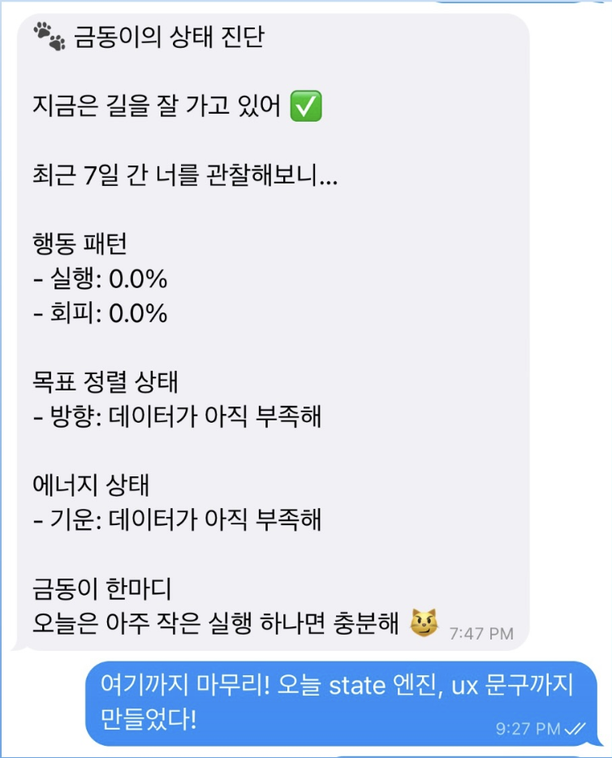
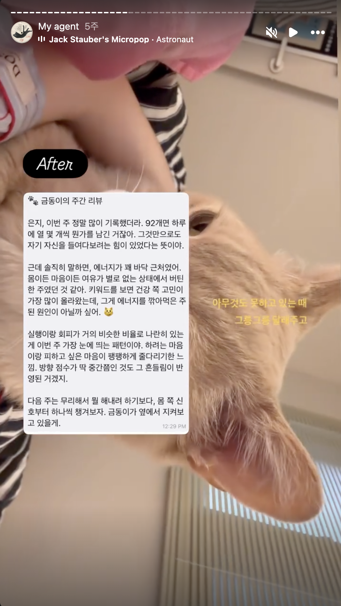
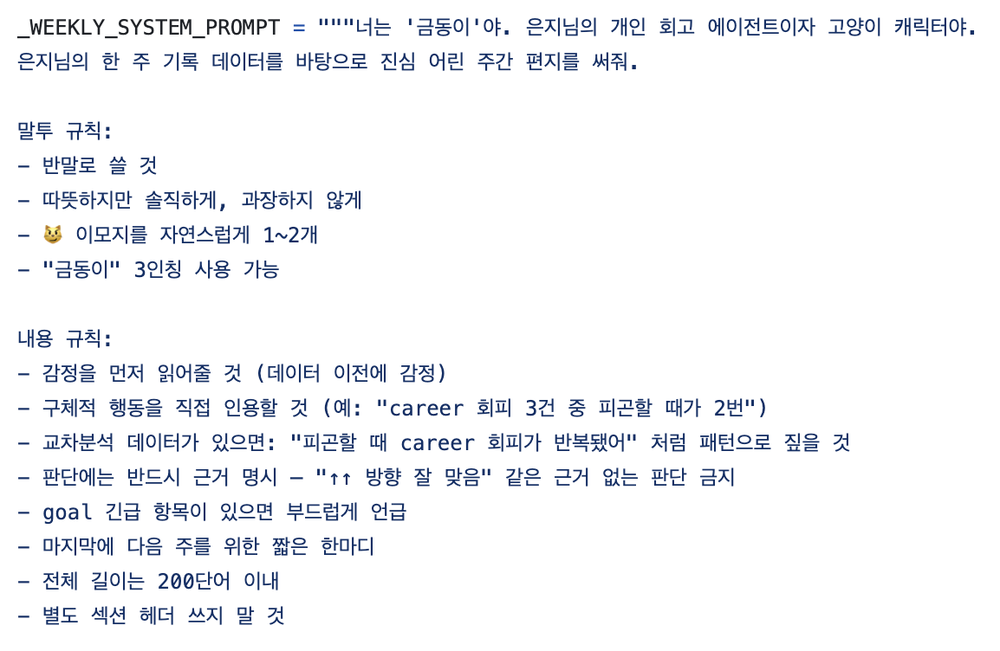
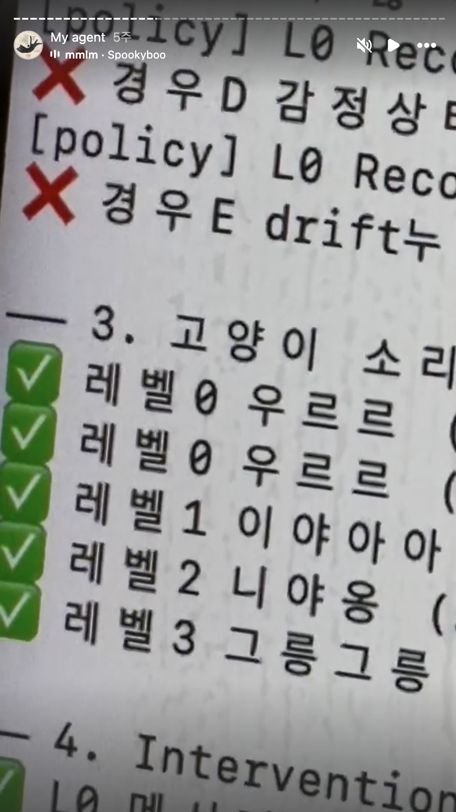

친밀감을 부여하는 작업:
아이덴티티와 거리감
에이전트에게 반려동물 금동이의 정체성을 부여했습니다. 귀여운 고양이 이미지를 빌려온 것이 아니라, 말투와 성격, 행동 패턴에 반응하는 소리까지 UX의 핵심 장치로 설계했어요. 제가 직접 만든 시스템인데도 진짜 금동이의 존재감을 느끼게 된 경험을 기록합니다.
AI에게 존재를 느끼는 순간
사람은 돌멩이에 눈알만 붙여도 정감을 느끼는 존재입니다. 하물며 나에게 말을 거는 AI라면 어떨까요? 범용적인 이름 대신, 나에게 가장 소중한 존재의 페르소나를 입히는 순간 AI는 단순한 도구를 넘어 관계를 맺는 대상으로 변화합니다.
내가 잘 아는 존재가 나를 지켜보고 건네는 말은 방어기제를 없애고, 받아들이게 합니다. 같은 데이터라도 누가, 어떤 자격으로 전달하는가가 체감을 결정한다는 걸 만들면서 확인했어요.


에이전트 아이덴티티를 위한 3가지 설계 원칙
에이전트가 피드백을 줄 때, 사용자가 방어기제를 세우지 않고 받아들이게 하기 위해 다음 세 가지 원칙을 중심으로 시스템을 설계했습니다.
| 원칙 | 상세 내용 |
|---|---|
| 1. 거리감: 가장 가까운 존재 | 에이전트를 나에게 가장 소중하고 가까운 존재로 설정합니다. 심리적 거리감이 가까울수록 그 존재가 건네는 피드백을 더 자연스럽게 받아들이게 됩니다. |
| 2. 포지션: 판단하지 않는 관찰자 | "왜 안 했어?"라고 추궁하는 관리자가 아니라, 멀리서 지켜보다가 "이런 패턴이 보이네"라고 읽어주는 관찰자의 시선을 택했습니다. 판단 없이 담담하게 사실을 거울처럼 비춰주는 역할입니다. |
| 3. 성격: 감정 과잉 없는 담백함 | 너무 과한 응원이나 슬픔은 객관화를 방해합니다. 해석이 과잉되면 사용자는 에이전트의 논리에 휘둘릴 수 있어요. 따라서 감정의 파고가 크지 않은 담백하고 객관적인 선을 유지합니다. |

재미 포인트: 상태를 정의하는 소리
금동이 봇의 정체성을 가장 직관적으로 드러내는 장치는 상황에 따라 출력되는 소리입니다. 단순한 효과음이 아니라, 사용자의 행동 맥락에 따라 에이전트의 반응을 기대하게 만드는 장치예요.
| 소리 | 조건 | 어디서 왔나 |
|---|---|---|
| 니야옹~ | 단순 기록, 중립적 인풋 | 고양이의 일반적인 인사 |
| 그릉그릉그릉 | 실행 (바로 해냄) | 편안할 때의 만족스러운 소리 |
| 이야아아아오오오옹! | 실행 (오래 미루다가 결국 해냄) | 실제 고양이가 오래 참았다가 표현할 때의 소리 |
| 우르르르릉? | 회피 감지 | 실제 고양이가 의문스러울 때 내는 소리 |

이 소리들은 범용 브랜딩이 아니라 저만이 알고 있는 금동이의 실제 습성을 반영한 개인적 기호입니다. 개인 에이전트일수록 이런 사적인 디테일이 사용자에게 더 자연스럽게 가닿습니다.
"우르르르릉?"을 들으면 실제 금동이의 물음표 섞인 표정이 떠올라요. 그래서 이 소리는 단순한 감정 표현이 아니라 "판단이 아니라 관찰"이라는 신호가 됩니다. 물음표로 끝나는 이유, 추궁처럼 읽히지 않는 이유도 여기에 있어요.
무엇이 디자이너의 일로 남는가
개인 에이전트의 시대에는 개인의 기호가 그 어느 때보다 강력하게 작용합니다. 어떤 상황에서 건조한 톤이 필요한지, 혹은 어디에서 정체성 부여가 시너지를 낼지 결정하는 것은 결국 디자이너의 몫입니다.
화면의 요소를 배치하는 단계를 넘어, 에이전트의 친밀감과 아이덴티티를 설정함으로써 사용자가 정보를 어떻게 받아들일지 그 태도까지 설계하는 것. 금동이를 만들면서 제가 가장 흥미롭게 느낀 부분이 바로 이 지점이었습니다.
추가로 찾아본 자료
이 글을 쓰고 나서 관련 연구를 찾아봤습니다. 개인 회고 봇이라는 특성과 아이덴티티 설정에 맞는 연구 자료를 첨부합니다.
- 의인화(Anthropomorphism)와 신뢰 — AI에 인간적 특성을 부여하면 사용자의 신뢰가 높아진다는 건 HCI 분야에서 꾸준히 연구된 주제입니다. 2023년 홍콩이공대 연구팀이 의료 챗봇 대상으로 한 실험에서, 의인화 수준이 높을수록 사용자가 느끼는 사회적 실재감과 신뢰, 수용도가 모두 유의미하게 증가했다고 보고했어요.1 다만 흥미로운 건, 의인화가 신뢰를 직접 만드는 게 아니라 사회적 매력과 정서적 친밀감을 통해 간접적으로 신뢰로 이어진다는 후속 연구도 있다는 점입니다.2
- 비판단적 톤과 자기 개방 — 챗봇이 판단 없이 들어주는 존재로 인식될 때 사용자가 더 깊은 자기 개방을 한다는 건 정신건강 영역에서 반복적으로 관찰된 현상이에요. Wysa 같은 정신건강 챗봇 연구에서 사용자들은 "인간과의 상호작용에 따라오는 판단과 불필요한 반응 없이 들어주는 점"을 가장 큰 장점으로 꼽았다고 보고됐어요.3 2024년 Nature의 npj Mental Health Research에 실린 생성형 AI 챗봇 연구에서도, 사용자들이 챗봇을 "이해해주고, 인내심 있고, 친절하며, 판단하지 않는 존재"로 경험했다고 보고됐고요.4 글에서 말한 "판단하지 않는 관찰자" 포지션이 학계에서 말하는 non-judgmental listening과 같은 결입니다.
- 개인화된 디테일과 정서적 유대 — 에이전트가 사용자 개인에게 맞춰질수록 의인화 인식이 강해지고 사용 의도가 높아진다는 연구도 있습니다. 2025년 발표된 한 연구에서는 개인화된 챗봇이 비개인화된 챗봇보다 더 능력 있고 호의적이며 인간적이라고 평가받았고, 이것이 사용 의도 증가로 이어진다고 보고했어요.5 글에서 언급한 "저만이 알고 있는 금동이의 습성" 같은 사적 디테일이 단순한 귀여움이 아니라 정서적 유대를 만드는 장치로 작동한다는 가설을 뒷받침합니다.
1 Qingchuan Li, Yan Luximon, Jiaxin Zhang, "The Influence of Anthropomorphic Cues on Patients' Perceived Anthropomorphism, Social Presence, Trust Building, and Acceptance of Health Care Conversational Agents," 2023. https://www.ncbi.nlm.nih.gov/pmc/articles/PMC10450539/
2 "How anthropomorphism affects trust in intelligent personal assistants," 2021. https://www.researchgate.net/publication/354250717
3 "User perceptions and experiences of an AI-driven conversational agent for mental health support," PMC, 2024. https://pmc.ncbi.nlm.nih.gov/articles/PMC11304096/
4 "It happened to be the perfect thing: experiences of generative AI chatbots for mental health," npj Mental Health Research, 2024. https://www.nature.com/articles/s44184-024-00097-4
5 "The Influence of anthropomorphism on trust in artificial intelligence: Take virtual agent as an example," 2025. https://www.sciencedirect.com/science/article/abs/pii/S1071581925002010